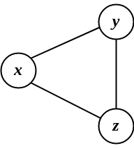
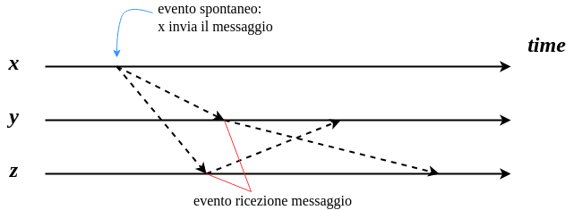
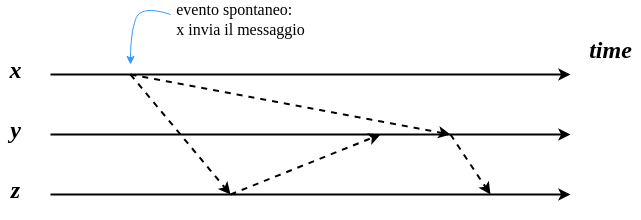
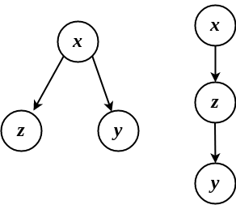

ADRC - Lesson 04
Ricoleggandoci al problema del broadcasting introdotto nella lezione 3, sappiamo che non ha senso calcolare
la complessità temporale in un sistema non sincrono.
Un'altro requisito necessario per poter calcolare la complessità temporale è la condizione di bounded delay.
Supponendo che siamo in queste condizioni, e per comodità che i messagi vengano trasmessi con uno stesso ritardo di una unità, si potrebbe stimare un upper-bound alla time complexity. Infatti, data una sorgente \(s \in V\), una stima può essere \[ time = \max_{x \in V}{ \lbrace d(s,x) \rbrace } \leq diam(G) \leq n-1 \]
1 Esercizio
Sotto l'assunzione che il sistema sia sincorono, e che il delay dei messaggi sia di una unità, calcolare la complessità temporale del protocollo di flooding per induzione sul tempo \(t\).
2 Time and Events
Dato uno stesso input a un algoritmo deterministico centralizzato, esso non solo genererà uno stesso output,
ma la sequenza di azioni che svolgerà per raggiungere tale output sarà sempre la stessa1, anche se viene rieseguito infinite volte.
La stessa cosa non si può sempre dire di un algoritmo deterministico distribuito.
Infatti nel del protocollo di flooding visto nella lezione 3, dato che il delay dei messaggi varia in maniera indeterminata,
avremo che la traiettori (o sequenza di azioni) verso l'unica configurazione finale varia da esecuzione ad esecuzione, anche a fronte
di una stessa configurazione iniziale.
Per rendere meglio l'idea facciamo un esempio. Consideriamo il seguente grafo

e consideriamo il nodo \(x\) come nodo sorgente.
Eseguendo per la prima volta il protocollo di flooding potrebbe capitare che i ritardi di trasmissione sugli archi \((x,y)\) e \((x,z)\) siano molto simili. Perciò una possibile sequenza di azioni potrebbe essere la seguente

Eseguendo il protocollo una seconda volta, potrebbe capitare che il ritardo di trasmissione sull'arco \((x,y)\) sia così tanto, che alla fine \(y\) riceve prima il messaggio tramite \(z\) anzichè \(x\).

Perciò, le due precedente esecuzioni possono essere rappresentati come dei grafi di comunicazione

Figura 4: Due possibili grafi di comunicazione
Dato che il grafo di comunicazione è sostanzialmente un albero ricoprente, possiamo avere quindi \(O(n^n)\) possibili sequenze di trasmissioni (o traiettorie) che portano alla configurazione finale.
3 Un lowerbound alla message complexity
Nella lezione 3 è stato dimostrato che la message complexity per l'algoritmo di flooding è \(O(|E|)\).
Quello che ci si più chiedere è: si può fare di meglio?
Si può progettare un protocollo con message complexity \(o(|E|)\)?
La risposta è no, e verrà dimstrato in questa sezione, ma prima è necessario fare alcune osservazioni.
Definiamo con \(\sigma(x,t)\) lo stato locale interno di un nodo \(x\) al tempo \(t\).
Per stato interno si intende qualsiasi informazione contenuta all'interno di \(x\), il contenuto della memoria,
il contenuto dei registri, il registro di stato, ecc…
Fact 1 Se un nodo \(x\) si trova in due ambienti differenti \(E_1,E_2\), ma il suo stato interno è identico, allora \(x\) non sarà in grado di distinguere i due ambienti ed eseguirà la stessa azione.
Fact 2 Se due nodi distinti \(x,y\) a un certo punto raggiungono lo stesso stato \(\sigma(x,t) = \sigma(y,t)\), allora se sollecitati da uno stesso evento eseguiranno le stesse azioni.
THM Sotto le seguenti ipotesi:
- Unique iterator
- Total reliability
- Bidirectional links
- Connectivity
ogni protocollo deterministico di broadcasting richiede di scambiare almeno \(m = |E|\) messaggi.
Proof: (per assurdo) supponiamo esista un protocollo \(P\) con message complexity di esattamente \(msg(P,G) = m-1 < m\).
Perciò, deve esistere un arco \((x,y)\) attraverso il quale non viene trasmesso alcun messaggio.
Certamente possiamo dire che ne \(x\) ne \(y\) sono initiator, in quanto se lo fossero certamente un messaggio sarebbe stato trasmesso sull'arco \((x,y)\) (per ipotesi di totla reliability).
A questo punto rimuoviamo l'arco \((x,y)\), e aggiungiamo un nuovo nodo \(z\) insieme agli archi \((x,z),(y,z)\). Rieseguiamo il protocollo con gli stessi ritardi di trasmissione (necessario per il discorso affrontato nella precedente sezione).
A livello di stato locale interno, ne a al nodo \(x\) ne al nodo \(y\) è cambiato nulla (Fact 2).
Infatti sia \(x\) che \(y\) vedranno un arco uscente laddove prima c'era l'arco \((x,y)\).
Però sappiamo che i nodi non sanno assolutamente distinguere i nodi agli estremi degli archi.
Perciò, per quanto ne sa \(x\), dall'altra parte del nuovo arco ci sta ancora \(y\) anzichè \(z\) (e viceversa).
Però, sapendo che da quella porta né \(x\) né \(y\) trasmettono, allora certamente nessuno dei due trasmetterà
sui relativi archi che lo collegano a \(z\).
Infatti i due ambienti, dal punto di vista locale, sono identici, perciò compiranno le stesse azioni (Fact 1), ovvero non
trasmettere nulla.
Dato che \(z\) è collegato solamente a \(x\) ed \(y\), esso certamente non può ricevere il messaggio da un altro nodo, perciò
il nodo \(z\) non verrà mai informato, e quindi il protocollo P non è corretto (assurdo) \(\square\).